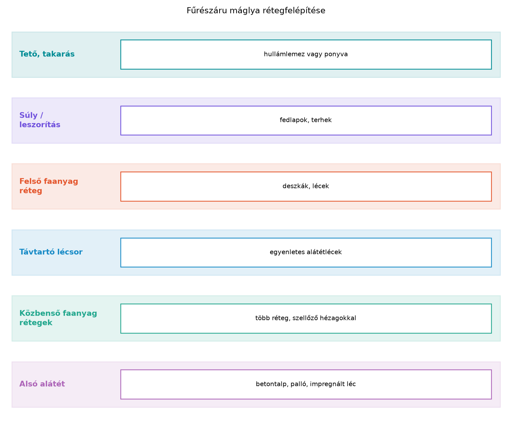

A műhelyben az anyag akkor ér pénzt, ha felhasználható állapotban marad addig is, amíg a munkadarabba kerül. Ha a fűrészáru megfekszik a földön, a lapanyag a falnak támasztva meghajlik, a furnérköteg összekeveredik, akkor a jó anyagból is selejt lesz. A raktár tehát nem egyszerű tárolóhely, hanem a minőségmegőrzés első állomása. Ebből az alfejezetből megtanulod, hogyan tárold a fűrészárut, a laptermékeket és a furnért úgy, hogy ne romoljon, ne vetemedjen, és mindig tudd, mennyi anyagod van.
Képzelj el egy kis asztalosműhelyt. A bejáratnál rakodótér, onnan balra a fűrészáru-tároló: vízszintes máglyák, közöttük lécek, fölöttük fedett szín. Vele szemben a lapanyagtároló állvány: vízszintes polcokon MDF- és forgácslap-kötegek, éleik védve. A furnér külön polcon, kötegekben, feliratozva. A ragasztók, pácok, lakkok zárható tűzvédelmi szekrényben vannak. A falon egy karton vagy képernyő mutatja, miből mennyi van készleten. Ez a kép a cél: rend, átláthatóság, biztonság.
A tárolási máglya rétegfelépítése:

A faanyag tehát nem érintkezik közvetlenül a talajjal, a rétegek között levegő áramlik, a tetejét takarás védi.
Definíció. A raktári nyilvántartás a készletváltozások folyamatos, dokumentált követése: minden bevételezést és kiadást feljegyzünk, így egy adott pillanatban megmondható, mennyi anyag van készleten, és mi mozdult el. A nyilvántartás lehet papíralapú karton vagy táblázatkezelő.
Definíció. A bevételezés az áru átvételének hivatalos rögzítése: a szállítólevél vagy számla adatait összevetjük a tényleges mennyiséggel és minőséggel, majd a készletet növeljük. A kiadás az anyag munkához, értékesítéshez vagy selejtezéshez való kivételezése, amely csökkenti a készletet.
Definíció. A leltár a raktárban ténylegesen megtalálható anyagok tételes felmérése és összehasonlítása a nyilvántartott készlettel. Az eltérést leltárkülönbözetnek nevezzük, és ki kell vizsgálni.
Definíció. A FIFO-elv (first in, first out – először be, először ki) azt jelenti, hogy a korábban beérkezett anyagot használjuk fel előbb. Így a faanyag nem öregszik, nem szárad túl, a ragasztó vagy lakk nem jár le.
Szabály. Fűrészáru tárolása. A fűrészárut vízszintes máglyában tárold, alátétlécekre fektetve. A talajtól legalább 20–30 cm-re legyen (ellenőrizendő: munkavédelmi és tűzvédelmi előírás). Az egyes rétegek közé távtartó léceket helyezz, hogy a levegő átjárja a köteget. A máglya tetejét takard, de az oldalát hagyd szellőzni. A fedett, szellős szín a legjobb; szabadban csak átmeneti tárolás legyen, és akkor is talajtól elválasztva, takarással. Az eltérő fafajt, vastagságot, nedvességi állapotot lehetőleg külön máglyába rakd, és cimkézd.
Szabály. Laptermékek tárolása. A forgácslapot, MDF-et, rétegelt lemezt, bútorlapot vízszintesen, teljes felületén alátámasztva tárold, például erős polcon vagy lapállványon. Ha függőlegesen tárolod, akkor enyhén döntve, teljes élével támasztottan, és rögzítve, mert a lap saját súlya alatt meghajolhat.
Figyelem. A függőlegesen tárolt lap és lapköteg eldőlhet; egy 2800 × 2070 × 18 mm-es MDF tábla kb. 80 kg (, tájékoztató). Csak dőlésbiztos, rögzített (lánccal vagy kengyellel biztosított) lapállványon tárold, egyszerre csak egy lapot mozgass, és álló lapköteg elé ne állj. Nagy táblát egyedül ne emelj: két ember vagy lapemelő, vákuumos emelő kell (ellenőrizendő: anyagmozgatási szabályzat, lásd Anyagmozgatás, rakatolás és raktározás). A lapok éleit és sarkait védd ütődéstől, mert a sérült él később hibát okoz a szabásnál és élzárásnál. A tárolóhely legyen száraz, huzatmentes, és közel azonos hőmérsékletű a műhellyel.
Szabály. Furnér tárolása. A furnért eredeti kötegben, sorrendben tárold. A kötegeket vízszintesen, sík felületen, pormentes helyen tartsd. A furnér érzékeny a páratartalom-változásra: ha kiszárad, rideggé, hullámossá válik; ha párás, penészedhet. Ne tedd közvetlen napfényre, radiátor mellé, huzatba. A felhasználás előtt a furnért a műhely klímájához kell szoktatni (ellenőrizendő: gyártói ajánlás).
Szabály. Veszélyes anyagok tárolása. A ragasztókat, pácokat, lakkokat, oldószereket, faanyagvédő szereket a biztonsági adatlap előírásai szerint, zárható, tűzvédelmi szekrényben, hűvös, szellőztetett helyen tárold. Élelmiszertől, fűrészportól elkülönítve. A kiürült göngyöleget is veszélyes hulladékként kezeld, ne öntsd lefolyóba.
Szabvány. A tárolási körülményekre nincs egyetlen kizárólagos szabvány; a munkavédelmi törvény, a tűzvédelmi előírások (OTSZ), a vegyi anyagokra vonatkozó kémiai biztonsági és tűzveszélyességi osztályozás, valamint a faanyagvédő szerekre és ragasztókra vonatkozó gyártói előírások az irányadók. A pontos tárolási hőmérsékletet, páratartalmat, rakatolási magasságot mindig a gépkönyv, a biztonsági adatlap, a műszaki adatlap és a helyi tűzvédelmi szabályzat alapján kell meghatározni (ellenőrizendő: az aktuális előírások). A faanyag felhasználási nedvességtartalma fűtött belső térben jellemzően 8–10 % körül alakul, de ez fafajtól és fűtési módtól függ (ellenőrizendő: célérték a beépítési környezet alapján).
Recept. A raktár kialakításának lépései.
A rajz a recept 3. és 4. lépését mutatja: a fűrészáru fekve, a konzolokon nyugszik, a lapköteg nem dőlhet el, a vegyszerek zárt szekrényben vannak, és minden tárolóhelyen címke áll. A HTML-változatban az elemekre mutatva megjelenik a tárolási szabály.
Továbbvitt eredmény. A raktári nyilvántartás adatait táblázatkezelőben is vezetheted; ezt a szemléletet és a táblázatkezelői képleteket használjuk a Irodai szoftverek az asztalos munkájában alfejezetben. A raktári karton oszlopai (megnevezés, egység, nyitó, bevételezés, kiadás, záró) a későbbi Anyagszükséglet-számítás: tömörfa, lapanyag, élzáró, vasalat, ragasztó, felületkezelő alapját is adják.
A raktárban a fűrészárut általában köbméterben (m³), a lapterméket négyzetméterben (m²) vagy darabban, az élzárót és léceket folyóméterben (fm) tartjuk nyilván. Az átszámításhoz mindig a kész méretet vagy a tárolási méretet kell használni.
Összefüggés. Fűrészáru darabszám és térfogat.
Ha ismerjük egy fűrészáru-darab hosszát
(),
szélességét
()
és vastagságát
()
méterben, akkor egy darab térfogata:
Az összes tárolt térfogatból a darabszám:
A méreteket mm-ből m-be kell átváltani: .
Példa. A raktárban tölgy fűrészáru van. Az átlagos darab hossza , szélessége , vastagsága . Hány darab van készleten?
Adott:
,
,
,
.
Keresett:
.
Ellenőrzés: , tehát a számítás helyes. ∎
Példa. Lapanyag készlet mérete.
A raktárban
db MDF lap van, mindegyik mérete
.
Hány
a készlet?
Egy lap területe:
Összesen:
Kerekítve: . A készlet tehát db, azaz kb. lapanyag. ∎
Példa. Élzáró folyóméter igény.
Egy szekrényajtó mérete
.
A négy oldalát élzáróval borítjuk. Mennyi élzáró folyóméter kell egy
ajtóra?
Kerület:
Az élzáró élenként túlnyúlik (vágási ráhagyás), gépi élzárásnál élenként kb. 30 mm (tájékoztató, ellenőrizendő: éllezáró gép):
Ha ilyen ajtót gyártunk, akkor élzáró kell. ∎
A készletnyilvántartásban az ilyen mennyiségeket folyamatosan frissítjük.
A nyilvántartás legegyszerűbb formája a raktári karton, amelyen tételenként vezetjük a változásokat. A záró készlet kiszámítása:
Példa kartonrészlet:
| Megnevezés | Egység | Nyitó | Bevételezés | Kiadás | Záró |
|---|---|---|---|---|---|
| Tölgy fűrészáru | m³ | 2,400 | 1,100 | 0,800 | 2,700 |
| MDF lap 18 mm | db | 42 | 15 | 22 | 35 |
| Élzáró 0,8 mm | fm | 150 | 100 | 80 | 170 |
A leltározáskor a tényleges készletet összemásoljuk a karton szerinti készlettel. Ha a valóság kevesebb, az anyaghiány; ha több, az anyagtöbblet. A különbözet okát írásban rögzíteni kell (selejt, mérési hiba, téves kiadás, lopás).
Technológiai lépések.
A tárolás során rendszeresen ellenőrizd:
Ha eltérést találsz, például a lap meghajlott, a fűrészáru fülledt, a furnér összekeveredett, azonnal válaszd ki a hibás anyagot, jelöld, és különítsd el, hogy ne kerüljön felhasználásra.
Hiba: A fűrészáru a földön fekszik, alátét
nélkül.
Ok: nincs megépített máglya vagy lustaság
lerakni.
Következmény: talajnedvesség felszívódik, a fa
vetemedik, gombásodik.
Helyes gyakorlat: mindig legalább alátétgerendára,
lécekre rakd, és fedd le.
Hiba: A laptermékeket függőlegesen, a falnak
támasztva tárolják.
Ok: helytakarékosság, de rossz alátámasztás.
Következmény: a lap saját súlya alatt meghajlik, a
vetemedett lapból nem lesz pontos bútorlap; a rosszul rögzített lapköteg
eldőlhet és ráeshet a dolgozóra.
Helyes gyakorlat: vízszintes, teljes felületű
alátámasztás, vagy döntött, rögzített lapállvány.
Hiba: A furnérkötegek megkeveredése, a sorrend
felborul.
Ok: a furnért nem cimkézik, több csomagot nyitnak
fel.
Következmény: a minta, a szín nem illeszkedik, a
teríték hibás.
Helyes gyakorlat: minden köteget eredeti sorrendben,
azonosítóval tárolj, és egyszerre csak annyit végy ki, amennyit azonnal
felhasználsz.
Hiba: A raktári nyilvántartást nem vezetik, csak
„fejben tartják”.
Ok: időhiány, kényelmesség.
Következmény: anyaghiány a gyártás közepén, fölös
vásárlás, leltárhiány.
Helyes gyakorlat: minden bevételezést és kiadást
azonnal rögzíteni, a záró készletet képlettel ellenőrizni.
Egy kis műhelyben a tanuló azt kapta feladatul, hogy készítse el a havi leltárt. A karton szerint MDF lapból db volt, de a polcon csak db-ot talált. A különbség db. A műhelyvezető kivizsgálta: az utolsó héten készült két gardróbszekrényhez a kiadást elfelejtették rávezetni a kartonra. A hiány tehát papíron jelentkezett, de a valóságban nem veszett el anyag. A tanulság: minden kiadást rögtön dokumentálni kell, különben a leltár látszólagos hiányt mutat, és a beszerzési döntés hibás lesz. Emellett kiderült, hogy a furnért egy radiátor mellé tették, és a felső réteg hullámossá vált. Ezt a köteget elkülönítették, csak sablonmunkára lehetett használni, a többit áthelyezték a radiátortól távoli, egyenletes klímájú polcra.
A válaszok a Megoldások elején találhatók.
1. feladat (A) Sorold fel, milyen adatokat rögzíts a raktári kartonon egy tételnél, és add meg a záró készlet képletét.
2. feladat (A) A raktárban bükk fűrészáru van. Az átlagos darab hossza , szélessége , vastagsága . Hány darab van készleten?
3. feladat (B) A karton adatai: nyitó készlet db forgácslap, bevételezés db, kiadás db, selejt db. Mennyi a záró készlet?
4. feladat (B) Egy forgácslap mérete . Hány egy lap? Ha db lapot tárolunk, hány a készlet?
5. feladat (C) A műhelyben az élzáró tekercsekből van. Egy ajtó kerülete , élenként ráhagyással számolj (tehát ajtónként kell). Hány ajtóhoz elegendő a készlet? Számolj, és becsüld meg, miért fontos a FIFO, ha két különböző színű élzáró van raktáron.
6. feladat (D) Tervezd meg egy kis műhely raktárának polc- és tárolóelrendezését az adatok alapján: a tárolni kívánt anyagok: fűrészáru, db lap, furnérköteg, ragasztók és lakkok. Írd le a zónák elhelyezését, a tárolók típusát és a FIFO-jelölést. Készíts hozzá vázlatot szövegesen.
Önellenőrzés – válaszok
1. feladat (A) A raktári karton oszlopai: megnevezés, egység, nyitó készlet, bevételezés, kiadás, záró készlet. Képlet: záró = nyitó + bevételezés – kiadás.
2. feladat (A)
Adott:
,
,
,
.
Egy darab:
.
Darabszám:
db.
3. feladat (B)
Záró =
db. A selejtet külön sorként vagy a kiadással együtt, de mindenképpen
rögzíteni kell.
4. feladat (B)
Egy lap:
.
db:
.
5. feladat (C)
Ajtók száma:
,
tehát legfeljebb
ajtóra elegendő (ráhagyás nélkül
ajtót kapnánk, ami túlbecsli a készletet). A FIFO azért fontos, mert ha
két színű élzáró van, a korábbi színt előbb használd fel, különben a
régi anyag megmarad, a színárnyalat nem lesz egységes, és a készlet sem
lesz reális.
6. feladat (D)
Elrendezési terv leírása: a bejárat közelében a rakodótér; tőle balra a
fűrészáru-tároló máglyákkal, alátétlécekkel; szemben a lapanyag tároló
vízszintes polcokkal; a furnér külön, sík polcon, eredeti kötegekben; a
ragasztók és lakkok zárható tűzvédelmi szekrényben a műhelytől
elkülönítve. Minden helyen cimke: anyag, méret, beérkezés, FIFO-jel (a
régebbi elöl). A közlekedőút szabadon marad.
A fűrészárut vízszintes máglyában, alátét- és távtartó lécekkel,
fedett, szellős helyen tárold, a talajtól elválasztva. A laptermékeket
vízszintes, teljes felületű alátámasztással védd a meghajlástól és az
élsérüléstől. A furnért eredeti kötegben, sorrendben, stabil
páratartalmú helyen kell tárolni. A raktári nyilvántartás a bevételezés,
kiadás és leltár folyamatos dokumentálása; a záró készletet a
nyitó + bevételezés – kiadás képlet adja. A
készletmennyiségeket m³, m², fm és darab egységben vezetjük, és az
átszámításokhoz mindig a mértékegységeket írjuk ki. A FIFO-elv szerint a
korábbi anyagot használjuk fel előbb. A veszélyes anyagokat zárható,
tűzvédelmi szekrényben, a biztonsági adatlap szerint tároljuk. A raktári
nyilvántartás adatai a számítástechnikai és kalkulációs feladatokhoz is
alapot adnak.
Forrástípusok: munkavédelmi törvény, tűzvédelmi előírások (OTSZ), CLP/kémiai biztonsági előírások, faanyag-tárolási szakmai gyakorlat, gyártói műszaki adatlapok, biztonsági adatlapok, MSZ EN szabványok a faanyagok osztályozására és a formaldehid-kibocsátásra (az aktuális számokat ellenőrizni kell). A cikkben szereplő nedvességcélértékek, tárolási távolságok, rakatolási magasságok tájékoztató, ellenőrizendő értékek. A pontos jogszabályhelyek, szabványszakaszok és gyártói előírások az adott termékhez és helyszínhez igazítva keresendők.